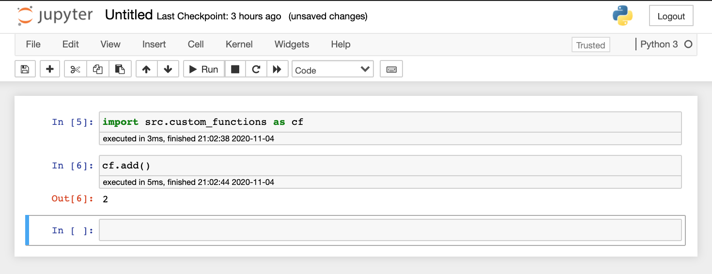
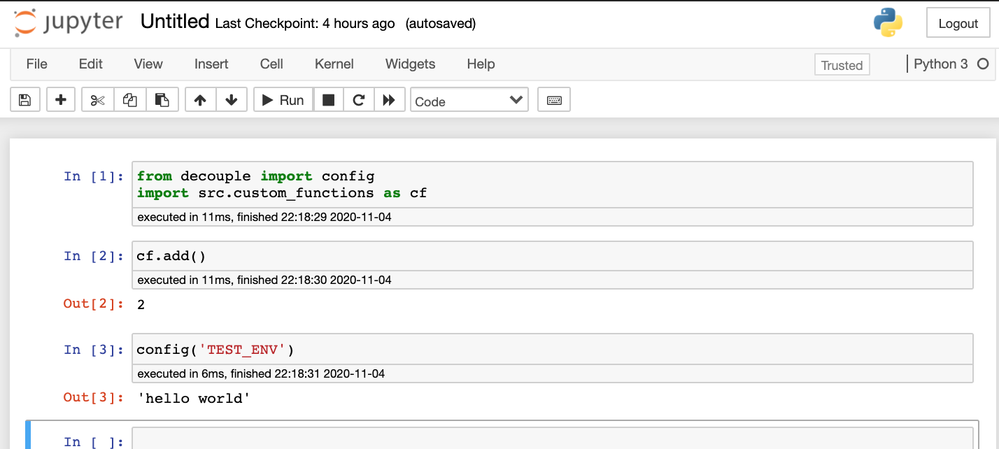

In this blog I will describe how to create a template for basic python data science projects.
Without a good setup, data science notebooks can become long and unwieldy.
Therefore, we will try and setup our project to prevent this from happening.
We will also test the flow of out setup but bringing in some test data.
First lets create a directory for our project
$ mkdir project
$ cd project
Create and acticate a virtual enviornment for the poject.
Here we will use virtaulenv to create a
python 3 virtual enviornment
$ virtualenv -p python3 venv
$ source venv/bin/activate # activate the virtaul enviornment
$(venv) pip install pandas
$(venv) pip install numpy
$(venv) pip install jupyterlab
$(venv) pip freeze > requirements.txt
Create a data directory to store our data as well as a subdirectory to keep unmodified raw data.
It's always good practice to keep a copy of your raw data.
$(venv) mkdir data
$(venv) mkdir data/raw
$(venv) touch data/raw.RawData.md
We will create a source folder to keep or source code and a test subdirectory to keep our tests.
Create placeholder file for custom functions, src/custom_functions.py
Create placeholder file for testing custom functions, src/tests/test_custom_functions.py
$(venv) mkdir src
$(venv) touch src/custom_functions.py
$(venv) mkdir src/tests
$(venv) touch src/tests/test_custom_functions.py
Add a dummy funciton to test against
The function
def hello_world():
return "hello world"
import unittest
import src.custom_functions as cf
class CustomFunctionsTests(unittest.TestCase):
def test_hello_world(self):
self.assertEqual(cf.hello_world(), "hello world")
if __name__ == '__main__':
unittest.main()
Run test to confirm the connection is working
$(venv) python tests/test_custom_functions.py
.
----------------------------------------------------------------------
Ran 1 test in 0.000s
OK
Access custom functions from Notebook to confirm connection
We will use the python decouple package to store our enviornment variables.
$(venv) pip install python-decouple
$(venv) touch .env
$(venv) echo .env >> .gitignore
$(venv) pip freeze > requirements.txt
Add a dummy enviornment variable to test conectivity
TEST_ENV="hello world"
Access the variable from the notebook

.
├── data
│ └── raw
│ └── DataInfo.md
├── notebooks
│ └── Untitled.ipynb
├── src
│ ├── custom_functions.py
│ └── tests
│ └── test_custom_functions.py
├── venv
├── requirements.txt
├── .gitignore
├── .env
└── README.md
Now we have a solid base from which to start our data science project.
We have: